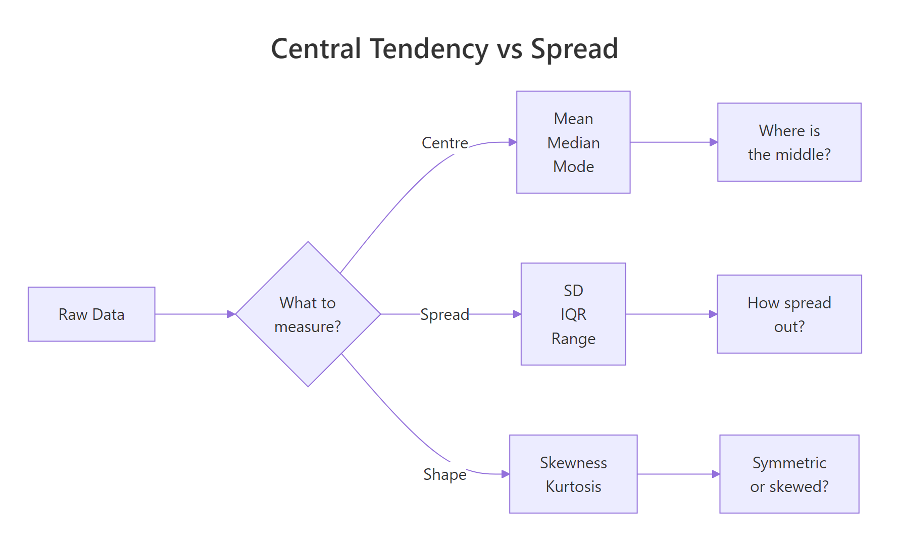
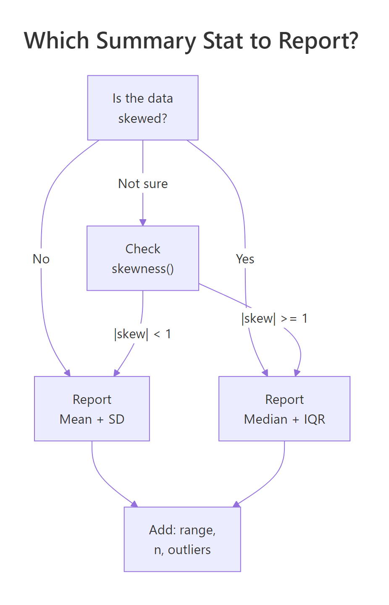
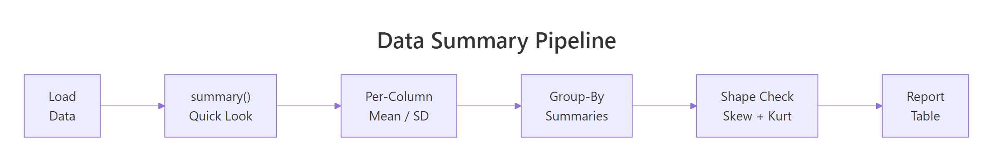

Descriptive Statistics in R: The 8 Numbers That Tell You What Your Data Is Doing
Descriptive statistics are the handful of numbers, mean, median, standard deviation, quartiles, skewness, that summarise a dataset so you can understand its centre, spread, and shape before doing any modelling or testing. In R, summary() gives you six of these in one call, and a few extra functions complete the picture.
What does summary() tell you about your data?
Every analysis starts with the same question: what does this data actually look like? Before you fit models or run tests, you need to know where the centre is, how spread out the values are, and whether anything looks unusual. Let's start with R's built-in summary(), it gives you six key numbers in one line.
Look at Ozone: the mean (42.13) is noticeably higher than the median (31.50). That gap tells you the data is right-skewed, a few very high ozone days are pulling the average up. You also see 37 missing values, which is important to know before you compute anything else.
When summary() reports NA's, that means those values were excluded from the min, max, mean, median, and quartile calculations. R did not silently treat them as zeros.
Try it: Run summary(mtcars$mpg). The output shows six numbers. A car that gets 21 mpg, does it fall above or below the median? Above or below the third quartile?
Click to reveal solution
Explanation: The median is 19.20 and the third quartile is 22.80, so 21 mpg falls above the median but below Q3. This car is in the upper half of fuel efficiency but not in the top 25%.
How do you calculate mean, median, and mode in R?
These three numbers answer the simplest possible question: where is the centre of your data? But they answer it in very different ways, and choosing the wrong one can mislead you.
The mean is the balance point, add up every value and divide by the count. The median is the middle value when you sort the data. The mode is whichever value appears most often.
Here's why the distinction matters. Imagine 10 people each earning \$50,000, plus one billionaire. The mean income is about \$91 million. The median is still \$50,000. The mean is technically correct but completely misleading, the median tells the real story.
The mean (42.1) is about 34% higher than the median (31.5). That's a strong hint of right skew, a handful of very high ozone days are dragging the mean upward.
R has no built-in function for the statistical mode, so here's a simple one:
tabulate(match(x, ux)) counts how often each unique value appears, then which.max() finds the position of the largest count. For continuous data like ozone levels, the mode is rarely useful, it's more helpful for categorical or integer data.
When should you report which measure? If mean and median are close, the data is roughly symmetric and either works. If the mean is much larger than the median, the data is right-skewed and the median is more representative.
A mean/median ratio of 1.34 confirms right skew. For ozone levels, the median (31.5 ppb) is the better summary, it tells you what a "typical" day looks like, without being distorted by extreme days.
Try it: Calculate the mean and median of mtcars$hp. Is the mean higher than the median? What does that tell you about the distribution of horsepower?
Click to reveal solution
Explanation: The mean (146.7) is higher than the median (123), indicating right skew. A few high-horsepower cars (like the Maserati Bora at 335 hp) pull the mean up.
How do you measure spread with standard deviation and IQR?
Knowing the centre isn't enough. Two datasets can have the same mean but wildly different spreads, exam scores clustered around 75% vs scattered from 20% to 100%. Spread statistics tell you how much the values vary.
Standard deviation (SD) measures the average distance from the mean. Interquartile range (IQR) measures the width of the middle 50% of the data (Q3 minus Q1). SD is sensitive to outliers; IQR is robust against them.
The formula for standard deviation captures this intuition, it's the square root of the average squared distance from the mean:
$$s = \sqrt{\frac{1}{n-1} \sum_{i=1}^{n} (x_i - \bar{x})^2}$$
Where:
- $s$ = sample standard deviation
- $n$ = number of observations
- $x_i$ = each individual value
- $\bar{x}$ = the sample mean
If you're not interested in the math, skip ahead, the practical code below is all you need.
The SD of 32.99 tells you that a typical ozone reading is about 33 ppb away from the mean (42.1). The IQR of 45.25 tells you the middle 50% of readings span a 45-ppb window. The range shows the full extent, from 1 ppb to 168 ppb, a massive spread.
Here's why the pairing matters. Let's inject an extreme outlier and see which statistic moves more:
Adding one value of 500 exploded the SD from 3.4 to 170.6, a 50x increase. The IQR barely moved (4 to 5.5). That's why IQR is the go-to spread measure for skewed data or data with outliers.
Try it: Calculate the SD and IQR of mtcars$wt (car weight in thousands of pounds). Which measure gives a clearer picture of how much typical car weights vary?
Click to reveal solution
Explanation: SD (0.978) and IQR (1.029) are close, suggesting the data is fairly symmetric. Since mean and median are also close (3.22 vs 3.33), either pair works here.
What do quantiles and percentiles reveal about your data?
Quantiles split your data into equal-sized chunks. Quartiles split into 4 parts (that's where Q1, Q2/median, Q3 come from). Percentiles split into 100 parts, so the 90th percentile means "90% of values fall below this."
Quantiles answer questions that mean and SD cannot: "What value marks the top 10%?" or "What range covers the middle 80% of observations?"
The default output matches what summary() gave you, the five-number summary. But quantile() lets you ask for any percentile you want:
The 5th percentile is 4.75 ppb and the 95th is 108.5 ppb, 90% of ozone readings fall within that range. The wide spread (4.75 to 108.5) confirms there's a lot of variability in this data.
R also has fivenum(), which gives a slightly different result than quantile():
Notice Q3 is 63.5 from fivenum() but 63.25 from quantile(). The difference is the algorithm: fivenum() uses the Tukey method while quantile() defaults to type 7. For most practical purposes, the difference is negligible.
quantile(x, type = 6). For large datasets, all 9 types converge to the same answer.Try it: Find the 5th and 95th percentiles of airquality$Temp. What temperature range covers 90% of the summer days?
Click to reveal solution
Explanation: The middle 90% of days ranged from 59°F to 94°F. The full range is 56 to 97°F, so the extreme 10% only adds a few degrees at each end, temperature is less variable than ozone.
What do skewness and kurtosis tell you about shape?
So far you've measured where the centre is (mean, median) and how spread out the values are (SD, IQR). The last piece of the puzzle is shape, is the data symmetric, or does it lean to one side?
Skewness measures how lopsided the distribution is. Picture a seesaw: if the right tail is longer (a few very large values), skewness is positive. If the left tail is longer, it's negative. A perfectly symmetric distribution has skewness = 0.
Kurtosis measures how heavy the tails are. Higher kurtosis means more outlier-prone data. A normal distribution has a kurtosis of about 3 (or 0 when "excess kurtosis" is reported).
The psych package's describe() gives you both in one call:
Ozone has a skewness of 1.21, that's solidly right-skewed (positive). The kurtosis of 1.11 (excess kurtosis) tells you the tails are heavier than a normal distribution, meaning extreme ozone days are more common than you'd expect from a bell curve.
Here's a quick rule of thumb for interpreting skewness:
- |skew| < 0.5: approximately symmetric
- 0.5 ≤ |skew| < 1: moderately skewed
- |skew| ≥ 1: heavily skewed
Let's compare a skewed variable (Ozone) with a near-symmetric one (Temp):
Ozone: skew = 1.21 (heavily right-skewed). Report median + IQR. Temp: skew = -0.37 (approximately symmetric). Report mean + SD.

Figure 1: Three families of descriptive statistics: centre, spread, and shape.
Try it: Use describe() from psych on mtcars$disp (engine displacement). Is it skewed? Would you report mean or median?
Click to reveal solution
Explanation: The skewness is 0.38, which is below 0.5, approximately symmetric. You can report mean + SD for displacement. Mean = 230.7, SD = 123.9.
How do you summarise statistics by group with dplyr?
Real analysis almost always involves groups. You don't just want the average ozone level, you want it by month. You don't want overall horsepower, you want it by number of cylinders. The dplyr package's group_by() |> summarise() pipeline handles this cleanly.
July and August have the highest average ozone (59–60 ppb) and temperature (84°F), while May is the coolest and cleanest. Notice that September's temperature SD (8.4) is much higher than August's (3.5), September weather is more variable.
If you need summaries for every numeric column at once, across() saves you from repeating the same code:
If you prefer base R, aggregate() does the same thing without loading any packages:
across() call handles them all.Try it: Group mtcars by cyl (number of cylinders) and compute the mean mpg and median hp per group. Which cylinder count has the best fuel economy?
Click to reveal solution
Explanation: 4-cylinder cars get the best fuel economy (26.7 mpg), while 8-cylinder cars get the worst (15.1 mpg) but have the most power (median 192.5 hp).
Which descriptive statistics should you report?
You now have a toolbox full of individual statistics. But when you're writing a report or preparing data for a model, which ones do you actually include? Here's the 8-number framework that covers every case:
- n, sample size
- Mean, centre (if symmetric)
- SD, spread (if symmetric)
- Median, centre (if skewed)
- IQR, spread (if skewed)
- Min, lower bound
- Max, upper bound
- Skewness, shape indicator (tells you whether to report mean+SD or median+IQR)

Figure 2: Decision flow: choose mean + SD or median + IQR based on skewness.
Let's build a complete summary table that computes all 8 numbers:
From this table, you can immediately see: Ozone (skew = 1.21) should be reported with median + IQR. The other three variables (|skew| < 0.5) are fine with mean + SD.
For a quick all-in-one report without building the table yourself, psych::describe() covers most of the 8 numbers:
Try it: Build a summary of airquality$Wind with all 8 numbers. Based on the skewness, should you report mean + SD or median + IQR?
Click to reveal solution
Explanation: Skewness is 0.34, which is below 0.5, approximately symmetric. Report mean (10.0) + SD (3.5). Wind speeds cluster around 10 mph with a typical variation of about 3.5 mph.
Practice Exercises
Exercise 1: Per-Species Descriptive Stats for Iris
Using the iris dataset, compute per-species descriptive statistics for Sepal.Length: mean, sd, median, IQR, and skewness. Which species has the most symmetric distribution?
Click to reveal solution
Explanation: All three species are nearly symmetric (|skew| < 0.15). Versicolor has the lowest absolute skewness (0.10), making it the most symmetric, though all three are close.
Exercise 2: Build a Custom my_summary() Function
Create a function my_summary() that takes a numeric vector and returns a named vector with all 8 key numbers: n, mean, sd, median, iqr, min, max, and skewness. Test it on airquality$Ozone (handling NAs).
Click to reveal solution
Explanation: The function removes NAs first, then computes all 8 statistics. Returning a named vector makes it easy to read and to use in sapply() across multiple columns.
Exercise 3: Grouped Summary With Skew Assessment
Use dplyr to produce a grouped summary of mtcars by gear, including mean, sd, and n for mpg, hp, and wt. Add a column that flags whether each group's mpg distribution is right-skewed (skewness > 0.5).
Click to reveal solution
Explanation: Only the 5-gear group shows right skew in mpg (0.55 > 0.5). The 3-gear and 4-gear groups are approximately symmetric. With only n = 5 in the 5-gear group, interpret the skewness cautiously.
Putting It All Together
Let's walk through a complete descriptive statistics analysis of the airquality dataset, the kind of summary you'd include at the start of a report or paper.
This analysis tells a clear story: ozone is right-skewed (report median + IQR), while temperature, wind, and solar radiation are roughly symmetric (report mean + SD). July and August have the highest ozone and temperature, while September shows the most temperature variability.
Summary
Here's a quick reference for the 8 statistics that tell you what your data is doing:
| Statistic | What it measures | R function | When to report |
|---|---|---|---|
| n | Sample size | length() or sum(!is.na()) |
Always |
| Mean | Centre (balance point) | mean() |
Symmetric data |
| SD | Spread (avg distance from mean) | sd() |
Pair with mean |
| Median | Centre (middle value) | median() |
Skewed data |
| IQR | Spread (middle 50% width) | IQR() |
Pair with median |
| Min | Lower bound | min() |
Always |
| Max | Upper bound | max() |
Always |
| Skewness | Shape (lopsidedness) | psych::describe()$skew |
Decide mean vs median |
Decision rule: If |skewness| < 1, report mean + SD. If |skewness| ≥ 1, report median + IQR. Always include n, min, and max regardless.

Figure 3: The descriptive statistics pipeline from raw data to report-ready table.
References
- R Core Team, An Introduction to R, Chapter 8: Probability distributions. Link
- Revelle, W., psych: Procedures for Psychological, Psychometric, and Personality Research.
describe()function reference. Link - Wickham, H. & Grolemund, G., R for Data Science, 2nd Edition. Chapter 3: Data transformation. Link
- dplyr documentation, summarise() reference. Link
- NIST/SEMATECH, e-Handbook of Statistical Methods, Section 1.3.5: Measures of Skewness and Kurtosis. Link
- Joanes, D.N. & Gill, C.A. (1998), Comparing measures of sample skewness and kurtosis. The Statistician, 47(1), 183–189.
- Bulmer, M.G. (1979), Principles of Statistics. Dover Publications. Chapters on descriptive measures and distribution shape.
Continue Learning
- EDA in R: A 7-Step Framework That Works on Every Dataset, The broader EDA process that these statistics feed into.
- ggplot2 Distribution Charts: Histograms, Density, Boxplots, Visualise the distributions behind these numbers.
- Outlier Detection in R: Four Methods and the One Question You Must Ask First, What to do when descriptive statistics flag unusual values.